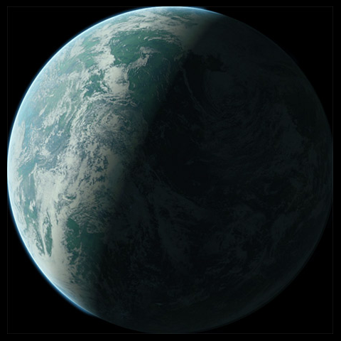

|
|
Coruscant is a vibrant planet, the heart of the galaxy. City-covered with towering skyscrapers and gleaming surroundings, the world's name is derived from a Latin word, literally meaning glittering and sparkling. The immense diversity and beautiful sights make Coruscant an important destination for your trip around the galaxy. |
|
A beautiful tropical paradise, Scarif is another planet you should keep on your priority list. With deep-blue, shallow oceans, tranquil and idyllic beaches, and tropical, volcanic island chains, Scarif's physical features give it a serene sight. Apart from the Imperial outposts stationed on the planet, Scarif is very peaceful, important to account for when travelling here. This is a highly recommended place to go to. |
|
|  |
Naboo is yet another beautiful planet to visit on your trip around the galaxy. With its plains and hills, its deep tunnels and large oceans, Naboo's vast diversity of different landscapes teeming with an abundance of life will remind you of home. Whether you want to enjoy the busy capital city of Theed or check out the peaceful, rolling hills and plains, or even go diving in the deep sea tunnels and oceas, there is something for everyone here at Naboo |
Created by Aruneem Bhowmick, Star Wars enthusiast.